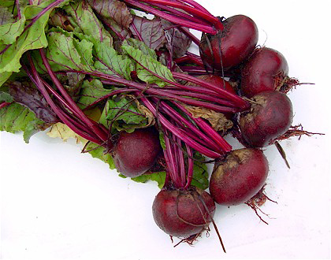

A bundle of organic beets from a local farm food co-op program.
55 to 65 days are needed from germination to harvest of the root
The usually deep purple roots of beetroot are eaten either grilled, boiled, or roasted as cooked vegetable, cold as a salad after cooking and adding oil and vinegar, or raw shredded, either alone or combined with any salad vegetable